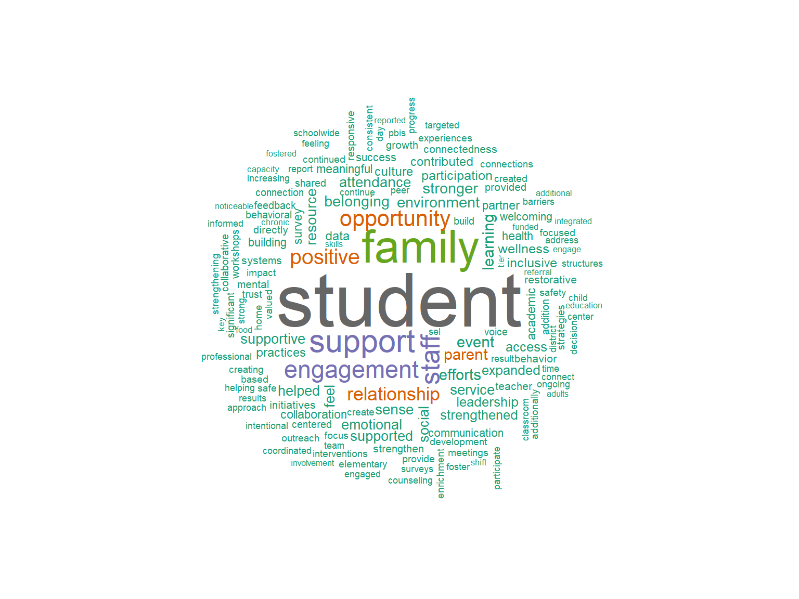
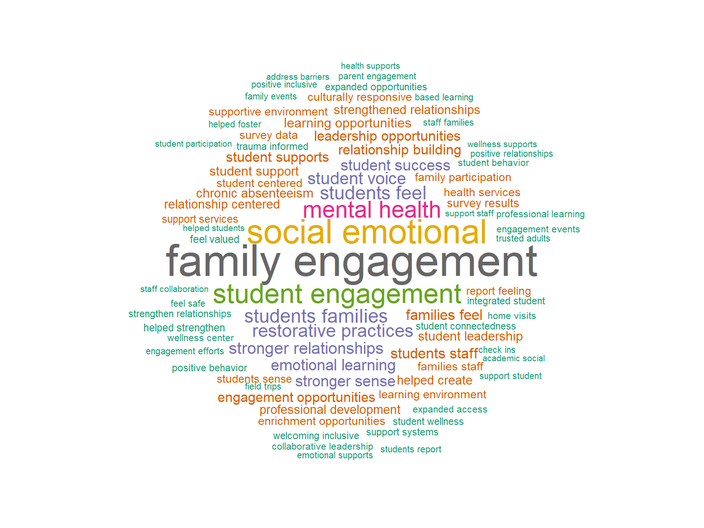
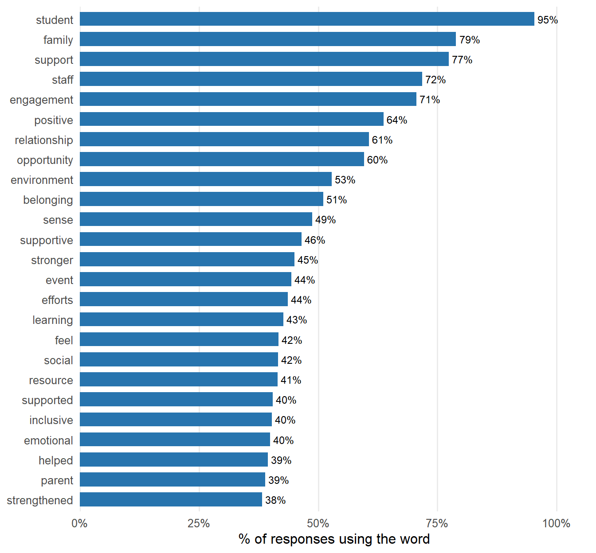
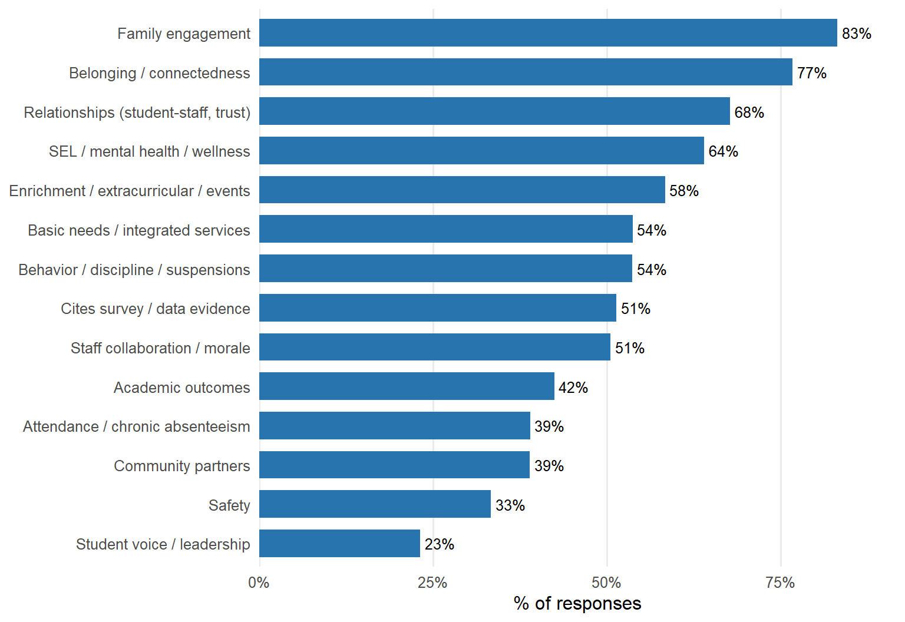
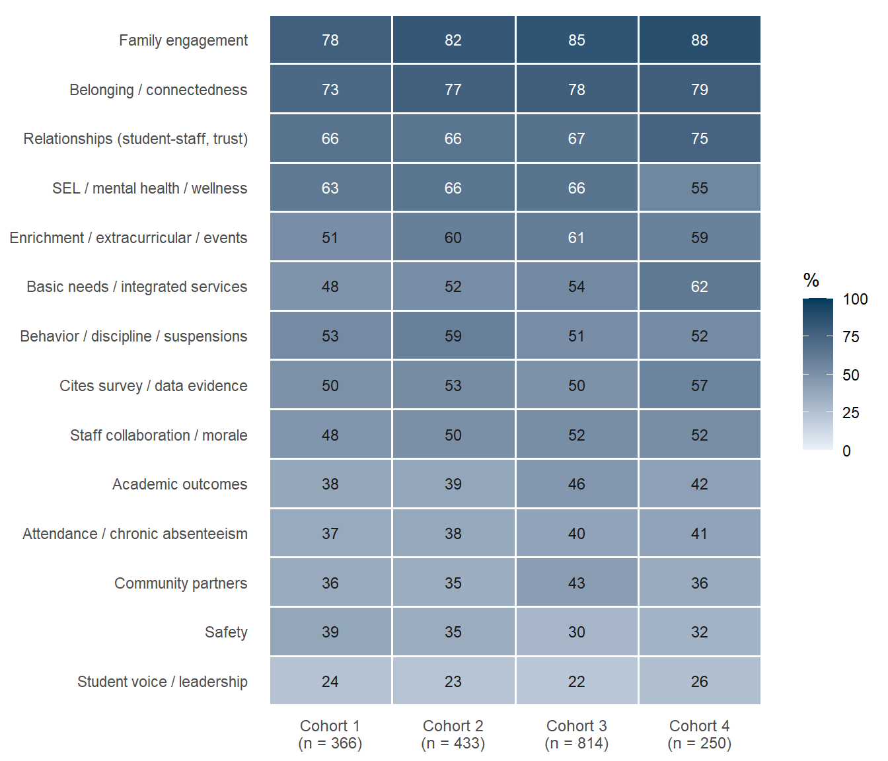
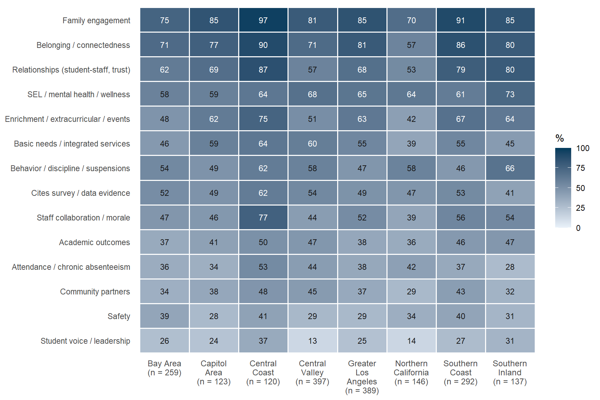
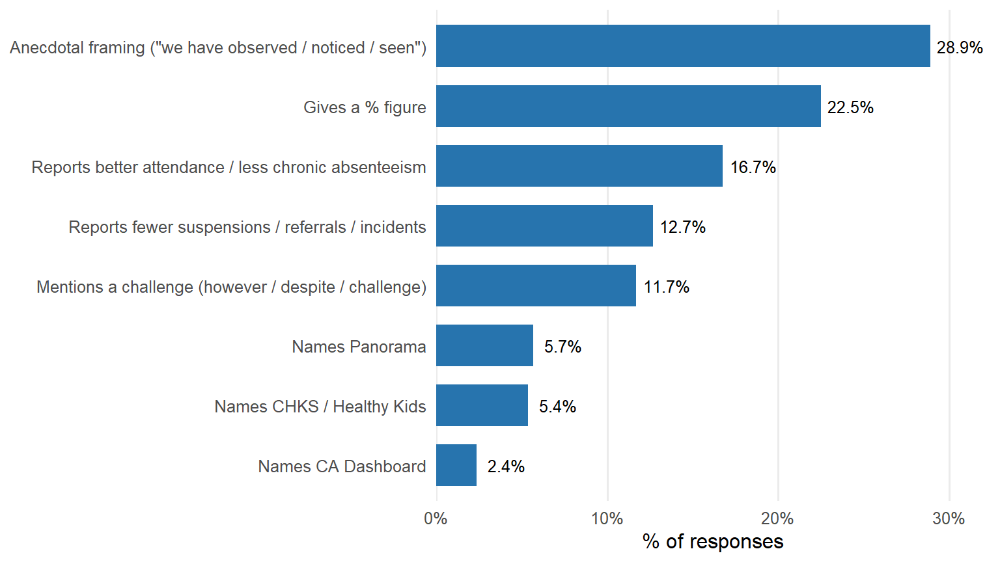

Observed Improvements in School Climate
Word frequencies, themes, and patterns in how CCSPP schools describe climate improvements (QID172).
How do schools describe improvements in school climate?
Year 3 Open-Ended Responses
Overview
QID172 asked grantees:
What improvements in school climate have you observed since the implementation of your CCSPP grant that you believe are connected to CCSPP activities? Please describe. (up to 300 words)
This page summarizes 1,863 usable responses from 2,381 schools in the 2025–26 APR. Responses had a median length of 221 words.
NoteWho answered this question
QID172 was shown only to schools that answered Strongly agree or Somewhat agree to “Our school climate has improved” (QID171). The 484 schools that were neutral or disagreed did not see the question, so these results describe how schools that saw improvement explain it. They cannot tell us why some schools did not.
Key takeaways
- Schools mostly describe climate as relationships. Family engagement (83%), belonging (77%) and student–staff relationships (68%) are the most common themes.
- SEL and mental health supports are the main mechanism named. “Social emotional” appears in 35% of responses, “mental health” in 21% and “restorative practices” in 16%.
- Few responses give measurable evidence. Only 22% include a percentage. Named data sources are rare: CHKS 5%, Panorama 6%, CA Dashboard 2%.
- Student voice is the least-mentioned theme (23%), even though it is central to the community schools framework.
Word cloud
Words that repeat the question (e.g., school, climate, CCSPP, grant, community, improved) are removed so the substantive content shows. Singular and plural forms are combined.

Frequency tables
% of responses is the share of the 1,863 responses that use the word or phrase at least once. Tables are searchable and sortable.

Themes
Each response was checked against a keyword list for each theme (see Methods). A response can count toward several themes.

Strongly vs. somewhat agree
Schools that strongly agreed their climate improved mention behavior and discipline (+9 points), academics (+6) and attendance (+5) more often than schools that somewhat agreed. They are no more likely to cite data (49% vs. 53%), so their stronger rating is not better documented.
| Theme | Strongly agree | Somewhat agree | Difference (pts) |
|---|---|---|---|
| Family engagement | 82% | 84% | -1.4 |
| Belonging / connectedness | 77% | 76% | +1.0 |
| Relationships (student-staff, trust) | 70% | 66% | +3.5 |
| SEL / mental health / wellness | 66% | 62% | +4.0 |
| Enrichment / extracurricular / events | 60% | 57% | +2.8 |
| Behavior / discipline / suspensions | 59% | 50% | +9.0 |
| Basic needs / integrated services | 54% | 54% | -0.3 |
| Staff collaboration / morale | 52% | 49% | +3.0 |
| Cites survey / data evidence | 49% | 53% | -3.3 |
| Academic outcomes | 46% | 40% | +5.8 |
| Attendance / chronic absenteeism | 42% | 37% | +4.9 |
| Community partners | 39% | 39% | +0.8 |
| Safety | 34% | 33% | +0.4 |
| Student voice / leadership | 23% | 23% | -0.0 |
By cohort
Answering QID172 depended on agreeing that climate improved, so the share of each cohort that answered varies a lot: 85% of Cohort 1 schools, compared with 55% of Cohort 4 schools, where many schools were neutral. Among schools that answered, Cohort 1 schools were the most likely to strongly agree (56%, compared with 26% in Cohort 4).
| Cohort | Schools | Agreed climate improved | Usable QID172 responses | % of cohort answering | % of responders strongly agreeing |
|---|---|---|---|---|---|
| Cohort 1 | 433 | 368 | 366 | 85% | 56% |
| Cohort 2 | 529 | 437 | 433 | 82% | 47% |
| Cohort 3 | 967 | 822 | 814 | 84% | 39% |
| Cohort 4 | 452 | 255 | 250 | 55% | 26% |

What schools describe is broadly similar across cohorts. The biggest differences are in Cohort 4, the newest cohort, whose responses mention basic needs and services (62% vs. 48% in Cohort 1), student–staff relationships (75% vs. 66%) and family engagement (88% vs. 78%) more often, and SEL and mental health less often (55% vs. 63%). This fits early-stage work focused on meeting basic needs and building trust with families. Cohort 1 mentions safety most often (39%).
By region

Central Coast responses are the most detailed on nearly every theme. Northern California (57% belonging) and the Bay Area (71%) are lowest on belonging and relationships. Student voice is especially rare in the Central Valley (13%) and Northern California (14%).
In schools’ own words
These excerpts are copied word for word from QID172 responses and show what the most common themes look like in practice. Each one is checked against the data when the page renders (see Methods). To protect privacy, quotes are labeled by cohort, region and QID171 rating only.
Family engagement
Parents now navigate the campus with a greater sense of agency and trust, knowing the school operates as a true extension of their neighborhood.
— Cohort 4 · Central Coast · Somewhat agree
These opportunities have helped families feel more connected to our school and have given them a voice in school decisions.
— Cohort 2 · Southern Coast · Strongly agree
Basic needs and integrated services
We have distributed essential items, including transportation support, clothing, and hygiene products, to reduce barriers to attendance and engagement.
— Cohort 3 · Southern Inland · Somewhat agree
Partnerships providing mental health counseling, vision services, dental care, food assistance, and community resources have helped address barriers that impact student well-being and readiness to learn.
— Cohort 1 · Greater Los Angeles · Strongly agree
Staff collaboration
Staff collaboration around behavior supports has also improved, contributing to stronger trust among staff and between staff and students.
— Cohort 2 · Capitol Area · Somewhat agree
Student voice
Student voice is the least-mentioned theme. When it does come up, it is often about students leading visible schoolwide activities:
Student voice was at the forefront as peers shared calendar events, celebrated birthdays, provided weather forecasts and even interviewed each other on the playground!
— Cohort 1 · Southern Inland · Strongly agree
How schools support their claims

About half of responses mention surveys or data in some form, but far fewer report a specific result. Only 13% describe fewer suspensions, referrals or incidents, and 17% describe better attendance. Roughly 29% rely on what staff have “observed” or “noticed,” and 12% acknowledge any challenge or mixed result.
The examples below show the range, from specific data to general statements.
A minority of responses give before-and-after figures from a named source:
Complementing these efforts, California Dashboard results show a reduction in chronic absenteeism from 41.5% to 35.7% and a decrease in suspension rates from 5.4% to 4.7%.
— Cohort 4 · Capitol Area · Strongly agree
CHKS data shows school connectedness rising to roughly 50% (from 39% in 2023), academic motivation near 62%, perceived safety near 59%, and an increased sense of belonging, alongside a declining suspension rate (2.5%, Green) and improving attendance.
— Cohort 3 · Southern Inland · Somewhat agree
More often, a response ends with a broad summary statement and no figures:
These combined efforts have contributed to a more inclusive, relationship-centered school culture where students and families feel increasingly connected, supported, and valued.
— Cohort 3 · Southern Coast · Somewhat agree
A few schools report declines or weak areas alongside their gains, even though they agreed climate improved:
School climate scores among students in grades 3–6 declined slightly from 49% to 47% favorable on the Panorama School Climate measure, and suspension rates remain at Orange on the CA Dashboard for multiple subgroups.
— Cohort 4 · Central Coast · Somewhat agree
However, Self-Efficacy ranks around the 20th percentile nationally with a 40% favorable response rate and a 5-point decline, suggesting students struggle with confidence in their academic abilities.
— Cohort 3 · Bay Area · Somewhat agree
This points to a technical assistance opportunity: helping schools connect climate claims to the survey and dashboard data they already collect.
Methods
CautionLimitations
- Keyword coding, not human coding. Themes are flagged by keyword patterns. They are a transparent first pass and will miss paraphrases and include some false matches.
- Only agreeing schools answered. See the note in the Overview.
- Copied text. 119 responses (6.4%) exactly match another school’s text across 36 groups, usually district-level boilerplate. They are included here; setting drop_duplicates <- TRUE removes them.
- Cohort 4 is underrepresented. Only about half of Cohort 4 schools answered QID172, because many were neutral on QID171. Cohort 4 results describe the schools that already see improvement.
Processing steps
- Loaded the APR 2025–26 export through the shared prep script (
00-prepare-climate-data.R), the same data used on the School Climate dashboard, keeping the 2,381 schools with a valid cohort, region and CDS code. - Dropped blank and placeholder answers (e.g., “N/A”).
- Tokenized with
tidytext, removed standard English stop words plus words that echo the prompt, and merged common singular/plural forms. - Counted each word and two-word phrase, both total mentions and the number of responses using it.
- Flagged themes and evidence types using the keyword patterns below.
- Selected example quotes by hand from responses that match each theme, leaving out copied (duplicate) responses and sentences that name a school. Each excerpt is stored with its Qualtrics ResponseId, and the page will not render unless every excerpt appears word for word in that response.
| Theme | Keyword pattern (regex) |
|---|---|
| Family engagement | famil|parent|caregiver|guardian |
| Belonging / connectedness | belonging|connectedness|connection|feel(s|ing)? (more )?connected|welcom|sense of community |
| Relationships (student-staff, trust) | relationship|trust|caring adult|mentor |
| SEL / mental health / wellness | social[- ]emotional||mental health|wellness|well-being|wellbeing|counsel|therap|social worker |
| Enrichment / extracurricular / events | enrichment|after[- ]school|extracurricular|?|events?|field trip|sports|family night |
| Basic needs / integrated services | food|pantry|clothing|closet|basic needs|resource|health (services|clinic)|dental|vision|wraparound|integrated (student )?support |
| Behavior / discipline / suspensions | behavior|suspension|discipline|referral|expulsion|pbis|restorative|conflict|fight |
| Cites survey / data evidence | survey|chks|healthy kids|panorama|dashboard||[0-9]+(.[0-9]+)??%|percent |
| Staff collaboration / morale | staff (morale|collaboration|retention|culture)|collaborat|teacher (retention|morale)|professional development |
| Academic outcomes | academic|achievement|reading|literacy|math|grades|test score|graduation |
| Attendance / chronic absenteeism | attendance|absentee|absence|truan|tard |
| Community partners | community partner|partner (organization|agenc)|partnered|partners||nonprofit|community[- ]based organization|? |
| Safety | |safety|bully |
| Student voice / leadership | student voice|student leader|youth voice|student input|student council||youth leader |
Social-emotional and mental health supports